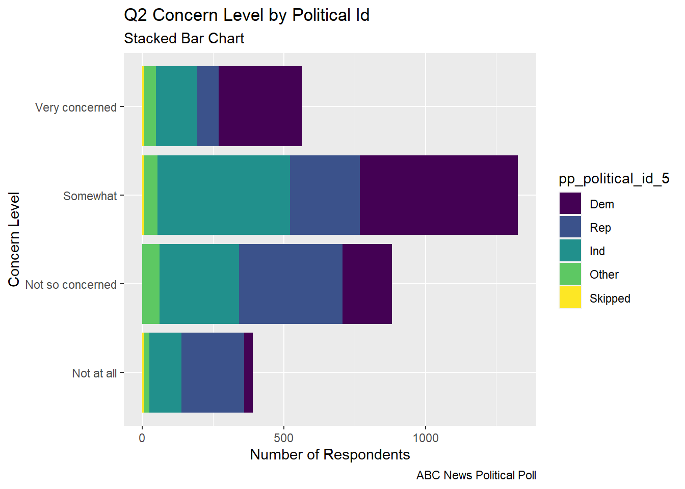

From our abc_poll data frame summary, we can see that this data set contains polling results from 527 respondents to an ABC news political poll. The results consist of information for two broad categories
Demographic characteristics of the respondents themselves (e.g., language of the poll given to the respondent (Spanish or English), age, educational attainment, ethnicity, household size, ethnic make up, gender, income range, Marital status, Metro category, Geographic region, Rental status, State, Employment status, Working characteristics, Willingness to have a follow up interview)
The responses that the individuals gave to 11 questions (there are 5 broad questions Q1-Q5, but Q1 consists of 6 sub questions, a-f).
Code
#Filter, rename variables, and mutate values of variables on read-inabc_poll<-read_csv("_data/abc_poll_2021.csv", skip =1, col_names=c("pp_id", "pp_Language_2", "delete","pp_age", "pp_educ_5", "delete", "pp_gender_2", "pp_ethnicity_5", "pp_hhsize_6", "pp_inc_7", "pp_marital_5", "pp_metro_cat_2", "pp_region_4","pp_housing_3", "pp_state", "pp_working_arrangement_9", "pp_employment_status_3", "Q1a_3", "Q1b_3", "Q1c_3", "Q1d_3","Q1e_3", "Q1f_3","Q2ConcernLevel_4","Q3_3", "Q4_5", "Q5Optimism_3", "pp_political_id_5", "delete", "pp_contact_2", "weights_pid"))%>%select(!contains("delete"))%>%#replace "6 or more" in pp_hhsize_6 to the value of 6 so that the column can be# of double data type.mutate(pp_hhsize_6 =ifelse(pp_hhsize_6 =="6 or more", "6", pp_hhsize_6)) %>%transform( pp_hhsize_6 =as.numeric(pp_hhsize_6))%>%#fix the issue with apostrophes in pp_educ_5 values on read inmutate(pp_educ_5 =ifelse(str_starts(pp_educ_5,"Bachelor"), "Bachelor", pp_educ_5))%>%mutate(pp_educ_5 =ifelse(str_starts(pp_educ_5, "Master"), "Master", pp_educ_5))# reduce lengthy responses to necessary info in nominal variables abc_poll$pp_Language_2 =substr(abc_poll$pp_Language_2,1,2) abc_poll$pp_gender_2 =substr(abc_poll$pp_gender_2,1,1) abc_poll$pp_contact_2 =substr(abc_poll$pp_contact_2,1,1)#reduce lengthy responses of nominal variables using Case When#pp_political_id_5 abc_poll<-mutate(abc_poll, pp_political_id_5 =case_when( pp_political_id_5 =="A Democrat"~"Dem", pp_political_id_5 =="A Republican"~"Rep", pp_political_id_5 =="An Independent"~"Ind", pp_political_id_5 =="Something else"~"Other", pp_political_id_5 =="Skipped"~"Skipped"))%>%#pp_housing_3mutate(pp_housing_3 =case_when( pp_housing_3 =="Occupied without payment of cash rent"~"NonPayment_Occupied", pp_housing_3 =="Rented for cash"~"Payment_Rent", pp_housing_3 =="Owned or being bought by you or someone in your household"~"Payment_Own"))%>%# pp_working_arrangement_9mutate(pp_working_arrangement_9 =case_when( pp_working_arrangement_9 =="Other"~"Other", pp_working_arrangement_9 =="Retired"~"Retired", pp_working_arrangement_9 =="Homemaker"~"Homemaker", pp_working_arrangement_9 =="Student"~"Student", pp_working_arrangement_9 =="Currently laid off"~"Laid Off", pp_working_arrangement_9 =="On furlough"~"Furlough", pp_working_arrangement_9 =="Employed part-time (by someone else)"~"Employed_PT", pp_working_arrangement_9 =="Self-employed"~"Emp_Self", pp_working_arrangement_9 =="Employed full-time (by someone else)"~"Employed_FT"))%>%#pp_ethnicity_5mutate( pp_ethnicity_5 =case_when( pp_ethnicity_5 =="2+ Races, Non-Hispanic"~"2+ \n NH", pp_ethnicity_5 =="Black, Non-Hispanic"~"Bl \n NH", pp_ethnicity_5 =="Hispanic"~"Hisp", pp_ethnicity_5 =="Other, Non-Hispanic"~"Ot \n NH", pp_ethnicity_5 =="White, Non-Hispanic"~"Wh \n NH")) abc_poll
Generated by summarytools 1.0.1 (R version 4.2.1) 2022-12-21
On the read in, I chose to
Filter:
complete_status: everyone was qualified
ppeducat: this categorizing of ppeduc5 can be done in the data frame using a case_when() and factoring
ABCAGE: this qualitative age range variable can be replicated by using the data in the ppage variable and a case_when; one might want to examine different ranges of ages.
Rename
I renamed all of the variables corresponding to demographic characteristics of the poll participant to begin with pp_.
I renamed all of the variables corresponding to survey question responses from the participants to begin with Q
If a variable had a fixed number of possible responses (which I could see from the summary), e.g., pp_marital had 5 possible responses, I included the number of “categories” or possible responses in the variable name preceded by an underscore, pp_marital_5
Mutate
I replaced the pp_hhsize_6 value of “6 or more” with 6, so that it could be of double data type
I mutated the pp_educ5 column to remove the apostrophes from “Bachelor’s” and “Master’s” that were producing the “\x92”’s in the values on read in.
If a nominal variable had lengthy values, I reduced them to the key info using mutate, str_sub, and case_when
Because our data frame is poll data, our frame will stay relatively wide. Each polled person pp_id represents a unique case and the values for the case are
the demographic characteristics of the polled person and
the individual’s responses to a given survey question
To tidy our data, I factored the following ordinal variables:
pp_inc_7: The income level of the polled person
pp_educ_5: The educational attainment level of the polled person
pp_employment_status_3: The employment status of the polled person (not working, working part time, working full time)
Code
abc_poll<-abc_poll %>%pivot_longer(c(starts_with("Q1")), names_to ="Question 1 part", values_to ="Q1 Response")abc_poll <-mutate(abc_poll, pp_inc_7 =recode_factor(pp_inc_7, "Less than $10,000"="<10,000", "$10,000 to $24,999"="10,000-\n 24,999", "$25,000 to $49,999"="25,000- \n 49,999", "$50,000 to $74,999"="50,00- \n 74,999", "$75,000 to $99,999"="75,000- \n 99,999", "$100,000 to $149,999"="100,000- \n 149,999","$150,000 or more"="$150,000 +",.ordered =TRUE))#pp_educ_5 abc_poll <-mutate(abc_poll, pp_educ_5 =recode_factor( pp_educ_5,"No high school diploma or GED"="No HS","High school graduate (high school diploma or the equivalent GED)"="HS/GED","Some college or Associate degree"="Some College","Bachelor"="Bachelor","Master"="Master+",.ordered =TRUE))##pp_political_id_5 abc_poll <-mutate(abc_poll, pp_political_id_5 =recode_factor( pp_political_id_5,"Dem"="Dem","Rep"="Rep","Ind"="Ind","Other"="Other","Skipped"="Skipped",.ordered =TRUE))#pp_employment_status_3 abc_poll <-mutate(abc_poll, pp_employment_status_3 =recode_factor( pp_employment_status_3,"Not working"="Not working","Working part-time"="Working part-time","Working full-time"="Working full-time",.ordered =TRUE)) abc_poll <-mutate(abc_poll, Q2ConcernLevel_4 =recode_factor( Q2ConcernLevel_4 ,"Not concerned at all"="Not at all","Not so concerned"="Not so concerned","Somewhat concerned"="Somewhat","Very concerned"="Very concerned",.ordered =TRUE))#Q4_5abc_poll <-mutate(abc_poll, Q4_5 =recode_factor( Q4_5 ,"Poor"="Poor","Not so good"="Not so good","Good"="Good","Excellent"="Excellent","Skipped"="Skipped",.ordered =TRUE)) abc_poll
Code
##Is the data frame arranged "alphabetically" or "ordinally?" abc_poll%>%arrange(desc(pp_educ_5))
Generated by summarytools 1.0.1 (R version 4.2.1) 2022-12-21
There were many variables from the abc_poll that I could imagine visualizing proportional relationships and proportional relationships by groups.
I explored multiple versions of bar charts to visualize the part-whole relationship of a respondents political identification and stated level of concern in poll question 2.
Code
# Gather/Group the values of the Categorical Variables (pp_political_id_5 and # Q2ConcernLevel_4abc_poll_pp_id_q2 <- abc_poll %>%group_by(pp_political_id_5, Q2ConcernLevel_4) %>%#mutate(pp_political_id_5 = na_if(pp_political_id_5, "Skipped"))%>%summarise(count =n())
The grouped bar chart shows each of the concern levels broken down by the respondent’s political id. You can see that many respondents are somewhat concerned
Code
##Grouped Bar Chart political id and concern levelabc_poll_pp_id_q2%>%ggplot(aes(fill=pp_political_id_5, y=count, x=Q2ConcernLevel_4)) +geom_bar(position="dodge", stat="identity") +labs(subtitle ="Grouped Bar Chart" ,y ="Number of Respondents",x="Concern Level",title ="Q2 Concern Level by Political Id",caption ="ABC News Political Poll")+coord_flip()
The stacked bar chart gives an easier to digest view of the comparative level of concern and the part of each concern level that comes from respondents from each political party.
Code
## Stacked bar abc_poll_pp_id_q2%>%ggplot(aes(fill=pp_political_id_5, y = count, x=Q2ConcernLevel_4)) +geom_bar(position="stack", stat="identity")+labs(subtitle ="Stacked Bar Chart",y ="Number of Respondents",x="Concern Level",title ="Q2 Concern Level by Political Id",caption ="ABC News Political Poll") +coord_flip()

The percent stacked bar chart allows us to very quickly see the proportion of respondents from each political party that make up a given concern level. This allows us to see how strongly the level of concern seems to relate to political party.
Code
# Percent Stacked barabc_poll_pp_id_q2%>%ggplot(aes(fill=pp_political_id_5, y=count, x=Q2ConcernLevel_4)) +geom_bar(position="fill", stat="identity")+labs(subtitle ="Percent Stacked Bar Chart" ,y ="Percentage of Respondents",x="Concern Level",title ="Q2 Proportionate Concern Level by Political Id",caption ="ABC News Political Poll",color ="Political ID")
The donut chart is a visual of the distribution of political identification of the poll respondents. I read that donut charts and pie charts are not recommended. In something with only 3 groups, I thought it could be ok, although it doesn’t allow one to see subtle differences between the size of groups like one would see in a “lollipop” or a “bar chart”.
Code
# Facet Wrap with Doughnut (Facet wrap didn't work...would have to fix this)# Compute percentagesabc_poll_pp_id_q2$fraction = abc_poll_pp_id_q2$count /sum(abc_poll_pp_id_q2$count)# Compute the cumulative percentages (top of each rectangle)abc_poll_pp_id_q2$ymax =cumsum(abc_poll_pp_id_q2$fraction)# Compute the bottom of each rectangleabc_poll_pp_id_q2$ymin =c(0, head(abc_poll_pp_id_q2$ymax, n=-1))# Compute label positionabc_poll_pp_id_q2$labelPosition <- (abc_poll_pp_id_q2$ymax + abc_poll_pp_id_q2$ymin) /2# Compute a good labelabc_poll_pp_id_q2$label <-paste0(abc_poll_pp_id_q2$pp_political_id_5, "\n value: ", abc_poll_pp_id_q2$count)# Make the plotggplot(abc_poll_pp_id_q2, aes(ymax=ymax, ymin=ymin, xmax=4, xmin=3, fill=pp_political_id_5)) +geom_rect() +# geom_label( x=3.5, aes(y=labelPosition, label=label), size=6) +coord_polar(theta="y") +# Try to remove that to understand how the chart is built initiallyxlim(c(2, 4)) +theme_void() +theme(legend.position ="right") +labs(subtitle ="Political ID of Respondents",title ="Donut Chart",caption ="ABC News Political Poll", )
Code
#facet_wrap(vars(Q2ConcernLevel_4))
Questions
How do I change the label of the legend from the name of the “fill” variable?
In what situations, if any, is a pie/donut chart appropriate?
I chose to visualize a “flow relationship”, between a respondent’s reported level of optimism reported in question 5 and several other demographic variables. I found the “skipped” responses to Question 5 to be difficult to read in a flow chart in a way that they weren’t with stacked bar charts or pie charts, so I removed them from these visualizations.
I represented the “flow relationship” using a chord diagram. I chose variables that had a limited number of values as my origin and destination variables.
Code
# Chord Diagrams # Charge the circlize librarylibrary(circlize)
Error in library(circlize): there is no package called 'circlize'
Political ID to Q5 Optimism Level showed a clear “flow” of Republican and Other party to pessimistic responses and a strong “flow” of Democratic party ID to optimistic responses.
Code
#Q5 Optimism Status vs Political ID# Gather the "edges" for our flow: origin: Political ID, destination: Q5 Optimism levelflow_pol_id_optimism <- abc_poll %>%select(pp_political_id_5, Q5Optimism_3)%>%mutate(Q5Optimism_3 =na_if(Q5Optimism_3, "Skipped"))%>%mutate(pp_political_id_5 =na_if(pp_political_id_5, "Skipped"))%>%with(table(pp_political_id_5, Q5Optimism_3))%>%# Make the circular plotchordDiagram(transparency =0.5)
Error in chordDiagram(., transparency = 0.5): could not find function "chordDiagram"
Code
title(main ="Political ID to Q5 Optimism Level", sub ="ABC News Political Poll")
Error in title(main = "Political ID to Q5 Optimism Level", sub = "ABC News Political Poll"): plot.new has not been called yet
Geographic Region to Q5 Optimism Level showed a simple “flow” however it was not so easy to discern a distinction in the proportion of optimismtic and pessimistic responses by region.
Code
#Q5 Optimism Status vs Geographic Region# Gather the "edges" for our flow: origin: Q5 Optimism, destination: Geographic Regionflow_region_educ <- abc_poll %>%select(pp_region_4, Q5Optimism_3)%>%mutate(Q5Optimism_3 =na_if(Q5Optimism_3, "Skipped"))%>%with(table(Q5Optimism_3, pp_region_4))%>%# Make the circular plotchordDiagram(transparency =0.5)
Error in chordDiagram(., transparency = 0.5): could not find function "chordDiagram"
Code
title(main ="Q5 Optimism Level to Geographic Region", sub ="ABC News Political Poll")
Error in title(main = "Q5 Optimism Level to Geographic Region", sub = "ABC News Political Poll"): plot.new has not been called yet
I think there are some interesting things to see in these visuals, but it takes too much effort. I would imagine the story would probably be clearer with percent stacked bar charts.
Ethnicity to Geographic Region was overwhelmed visually by the size of the white only demographic. One could see the strong connection between hispanic and other demographics to the West and South.
Code
#Ethnicity# Gather the "edges" for our flow: origin: Ethnicity, destination: Geographic Regionflow_region_educ <- abc_poll %>%select(pp_region_4, pp_ethnicity_5)%>%with(table(pp_ethnicity_5, pp_region_4))%>%# Make the circular plotchordDiagram(transparency =0.5)
Error in chordDiagram(., transparency = 0.5): could not find function "chordDiagram"
Code
title(main ="Ethnicity to Geographic Region", sub ="ABC News Political Poll")
Error in title(main = "Ethnicity to Geographic Region", sub = "ABC News Political Poll"): plot.new has not been called yet
Income Level to Q5 Optimism Status was overwhelmed visually by the number of different income levels and the formatting of their labels. Also, for income levels with relatively few respondents, it is difficult to see the distinction between the optimistic and pessimistic flows. Notably, there does not seem to be a strong relationship between income level and reported optimism in question 5.
Code
#Q5 Optimism Status vs Income Level# Gather the "edges" for our flow: origin: Income Level, destination: Q5 Optimism levelflow_optimism_inc <- abc_poll %>%select(pp_inc_7, Q5Optimism_3)%>%mutate(Q5Optimism_3 =na_if(Q5Optimism_3, "Skipped"))%>%with(table(pp_inc_7, Q5Optimism_3))%>%# Make the circular plotchordDiagram(transparency =0.5)
Error in chordDiagram(., transparency = 0.5): could not find function "chordDiagram"
Code
title(main ="Income Level to Q5 Optimism Level", sub ="ABC News Poll")
Error in title(main = "Income Level to Q5 Optimism Level", sub = "ABC News Poll"): plot.new has not been called yet
Code
#Marital Status# Gather the "edges" for our flow: origin: Marital Status, destination: Geographic Region# flow_region_educ <- abc_poll %>% # select(pp_region_4, pp_marital_5)%>%# # with(table(pp_marital_5, pp_region_4))%>%# # # Make the circular plot# chordDiagram(transparency = 0.5)# title(main = "Chord Diagram", sub = "Marital Status to Geographic Region")
Education Level to Geographic Region was overwhelmingly busy visually. Although it is pretty, I think this information would be easier to parse in a percent stacked bar chart.
Code
#Education level to Geographic Region# Gather the "edges" for our flow: origin: Education Level, destination: Geographic Regionflow_region_educ <- abc_poll %>%select(pp_region_4, pp_educ_5)%>%with(table(pp_educ_5, pp_region_4))%>%# Make the circular plotchordDiagram(transparency =0.5)
Error in chordDiagram(., transparency = 0.5): could not find function "chordDiagram"
Code
title(main ="Education Level to Geographic Region", sub ="ABC News Political Poll")
Error in title(main = "Education Level to Geographic Region", sub = "ABC News Political Poll"): plot.new has not been called yet
Questions
Why do the colors of my chord diagram change each time I run the chunk?
How do I fix the labels around the circle (other than using “newline”)?
Other than traffic/shipping/migration patterns, what are examples of ideas that are well represented by chord charts?
I noticed these in some of the earlier lesson materials and was just experimenting with them here…There were so many categorical variables in the abc_poll data, that I thought that some bivariate relationships might have a nice visual story with heat maps.
Code
# Heat Map Geographic Region, Political IDabc_poll%>%count(pp_region_4, pp_political_id_5) %>%ggplot(mapping =aes(x = pp_political_id_5, y = pp_region_4))+geom_tile(mapping =aes(fill = n))
Code
# Heat Income Level, Political IDabc_poll%>%count(pp_inc_7, pp_educ_5) %>%ggplot(mapping =aes(x = pp_educ_5, y = pp_inc_7))+geom_tile(mapping =aes(fill = n))
Our data frame did not consist of any variables measured over time. However, it does have each poll respondent’s age.
If each respondent was asked the same question every year, we could see the evolution of their responses over time
Questions
Do analysts ever use “age” as a variable representing time?
Source Code
---title: "Challenge 6"author: "Theresa Szczepanski"description: "Visualizing Time and Relationships"date: "10/21/2022"format: html: toc: true code-copy: true code-tools: true df-print: paged code-fold: truecategories: - challenge_6 # - hotel_bookings #- air_bnb #- fed_rate #- debt #- usa_households - abc_poll - Theresa_Szczepanski---```{r}#| label: setup#| warning: false#| message: falselibrary(tidyverse)library(ggplot2)library(readxl)knitr::opts_chunk$set(echo =TRUE, warning=FALSE, message=FALSE)```## Challenge Overview[R Graph Gallery](https://r-graph-gallery.com/) is a good starting point for thinking about what information is conveyed in standard graph types, and includes example R code.### abc_poll ⭐⭐⭐::: panel-tabset### Read in the data::: panel-tabset### Briefly describe the dataFrom our `abc_poll` data frame summary, we can see that this data setcontains polling results from 527 respondents to an ABC news political poll. The results consist of information for two broad categories- *Demographic characteristics* of the respondents themselves (e.g., language of the poll given to the respondent(Spanish or English), age, educational attainment, ethnicity, household size,ethnic make up, gender, income range, Marital status, Metro category, Geographic region, Rental status, State, Employment status, Working characteristics, Willingness to have a follow up interview)- *The responses that the individuals gave* to 11questions (there are 5 broad questions Q1-Q5, but Q1 consists of 6 sub questions, a-f).```{r}#Filter, rename variables, and mutate values of variables on read-inabc_poll<-read_csv("_data/abc_poll_2021.csv", skip =1, col_names=c("pp_id", "pp_Language_2", "delete","pp_age", "pp_educ_5", "delete", "pp_gender_2", "pp_ethnicity_5", "pp_hhsize_6", "pp_inc_7", "pp_marital_5", "pp_metro_cat_2", "pp_region_4","pp_housing_3", "pp_state", "pp_working_arrangement_9", "pp_employment_status_3", "Q1a_3", "Q1b_3", "Q1c_3", "Q1d_3","Q1e_3", "Q1f_3","Q2ConcernLevel_4","Q3_3", "Q4_5", "Q5Optimism_3", "pp_political_id_5", "delete", "pp_contact_2", "weights_pid"))%>%select(!contains("delete"))%>%#replace "6 or more" in pp_hhsize_6 to the value of 6 so that the column can be# of double data type.mutate(pp_hhsize_6 =ifelse(pp_hhsize_6 =="6 or more", "6", pp_hhsize_6)) %>%transform( pp_hhsize_6 =as.numeric(pp_hhsize_6))%>%#fix the issue with apostrophes in pp_educ_5 values on read inmutate(pp_educ_5 =ifelse(str_starts(pp_educ_5,"Bachelor"), "Bachelor", pp_educ_5))%>%mutate(pp_educ_5 =ifelse(str_starts(pp_educ_5, "Master"), "Master", pp_educ_5))# reduce lengthy responses to necessary info in nominal variables abc_poll$pp_Language_2 =substr(abc_poll$pp_Language_2,1,2) abc_poll$pp_gender_2 =substr(abc_poll$pp_gender_2,1,1) abc_poll$pp_contact_2 =substr(abc_poll$pp_contact_2,1,1)#reduce lengthy responses of nominal variables using Case When#pp_political_id_5 abc_poll<-mutate(abc_poll, pp_political_id_5 =case_when( pp_political_id_5 =="A Democrat"~"Dem", pp_political_id_5 =="A Republican"~"Rep", pp_political_id_5 =="An Independent"~"Ind", pp_political_id_5 =="Something else"~"Other", pp_political_id_5 =="Skipped"~"Skipped"))%>%#pp_housing_3mutate(pp_housing_3 =case_when( pp_housing_3 =="Occupied without payment of cash rent"~"NonPayment_Occupied", pp_housing_3 =="Rented for cash"~"Payment_Rent", pp_housing_3 =="Owned or being bought by you or someone in your household"~"Payment_Own"))%>%# pp_working_arrangement_9mutate(pp_working_arrangement_9 =case_when( pp_working_arrangement_9 =="Other"~"Other", pp_working_arrangement_9 =="Retired"~"Retired", pp_working_arrangement_9 =="Homemaker"~"Homemaker", pp_working_arrangement_9 =="Student"~"Student", pp_working_arrangement_9 =="Currently laid off"~"Laid Off", pp_working_arrangement_9 =="On furlough"~"Furlough", pp_working_arrangement_9 =="Employed part-time (by someone else)"~"Employed_PT", pp_working_arrangement_9 =="Self-employed"~"Emp_Self", pp_working_arrangement_9 =="Employed full-time (by someone else)"~"Employed_FT"))%>%#pp_ethnicity_5mutate( pp_ethnicity_5 =case_when( pp_ethnicity_5 =="2+ Races, Non-Hispanic"~"2+ \n NH", pp_ethnicity_5 =="Black, Non-Hispanic"~"Bl \n NH", pp_ethnicity_5 =="Hispanic"~"Hisp", pp_ethnicity_5 =="Other, Non-Hispanic"~"Ot \n NH", pp_ethnicity_5 =="White, Non-Hispanic"~"Wh \n NH")) abc_pollView(abc_poll)```### Post Read in Data Summary```{r}print(summarytools::dfSummary(abc_poll,varnumbers =FALSE,plain.ascii =FALSE,style ="grid",graph.magnif =0.70,valid.col =FALSE),method ='render',table.classes ='table-condensed')```:::On the read in, I chose to **Filter**:- `complete_status`: everyone was qualified- `ppeducat`: this categorizing of `ppeduc5` can be done in the data frameusing a `case_when()` and factoring- `ABCAGE`: this qualitative age range variable can be replicated by using thedata in the `ppage` variable and a `case_when`; one might want to examine different ranges of ages.__Rename__- I renamed all of the variables corresponding to _demographic characteristics of the poll participant_ to begin with `pp_`.- I renamed all of the variables corresponding to _survey question responses_from the participants to begin with `Q`- If a variable had a fixed number of possible responses (which I could see fromthe summary), e.g., `pp_marital` had 5 possible responses, I included the number of "categories" or possible responsesin the variable name preceded by an underscore, `pp_marital_5`__Mutate__ - I replaced the `pp_hhsize_6` value of "6 or more" with 6, so that it could be of double data type - I mutated the `pp_educ5` column to remove the apostrophes from "Bachelor's" and "Master's" that were producing the "\\x92"'s in the values on read in. - If a _nominal_ variable had lengthy values, I reduced them to the key info using `mutate`, `str_sub`, and `case_when`### Tidy/Mutate Data (as needed)Because our data frame is poll data, our frame will stay relatively wide. Eachpolled person `pp_id` represents a unique case and the values for the case are- the demographic characteristics of the polled person and- the individual's responses to a given survey questionTo tidy our data, I factored the following ordinal variables:- `pp_inc_7`: The income level of the polled person- `pp_educ_5`: The educational attainment level of the polled person- `pp_employment_status_3`: The employment status of the polled person (not working, working part time, working full time)```{r}abc_poll<-abc_poll %>%pivot_longer(c(starts_with("Q1")), names_to ="Question 1 part", values_to ="Q1 Response")abc_poll <-mutate(abc_poll, pp_inc_7 =recode_factor(pp_inc_7, "Less than $10,000"="<10,000", "$10,000 to $24,999"="10,000-\n 24,999", "$25,000 to $49,999"="25,000- \n 49,999", "$50,000 to $74,999"="50,00- \n 74,999", "$75,000 to $99,999"="75,000- \n 99,999", "$100,000 to $149,999"="100,000- \n 149,999","$150,000 or more"="$150,000 +",.ordered =TRUE))#pp_educ_5 abc_poll <-mutate(abc_poll, pp_educ_5 =recode_factor( pp_educ_5,"No high school diploma or GED"="No HS","High school graduate (high school diploma or the equivalent GED)"="HS/GED","Some college or Associate degree"="Some College","Bachelor"="Bachelor","Master"="Master+",.ordered =TRUE))##pp_political_id_5 abc_poll <-mutate(abc_poll, pp_political_id_5 =recode_factor( pp_political_id_5,"Dem"="Dem","Rep"="Rep","Ind"="Ind","Other"="Other","Skipped"="Skipped",.ordered =TRUE))#pp_employment_status_3 abc_poll <-mutate(abc_poll, pp_employment_status_3 =recode_factor( pp_employment_status_3,"Not working"="Not working","Working part-time"="Working part-time","Working full-time"="Working full-time",.ordered =TRUE)) abc_poll <-mutate(abc_poll, Q2ConcernLevel_4 =recode_factor( Q2ConcernLevel_4 ,"Not concerned at all"="Not at all","Not so concerned"="Not so concerned","Somewhat concerned"="Somewhat","Very concerned"="Very concerned",.ordered =TRUE))#Q4_5abc_poll <-mutate(abc_poll, Q4_5 =recode_factor( Q4_5 ,"Poor"="Poor","Not so good"="Not so good","Good"="Good","Excellent"="Excellent","Skipped"="Skipped",.ordered =TRUE)) abc_poll##Is the data frame arranged "alphabetically" or "ordinally?" abc_poll%>%arrange(desc(pp_educ_5))```### Mutated Summary```{r}print(summarytools::dfSummary(abc_poll,varnumbers =FALSE,plain.ascii =FALSE,style ="grid",graph.magnif =0.70,valid.col =FALSE),method ='render',table.classes ='table-condensed')```### Visualizing Part-Whole RelationshipsThere were many variables from the `abc_poll` that I could imagine visualizing proportional relationships and proportional relationships by groups.I explored multiple versions of bar charts to visualize the part-whole relationshipof a respondents political identification and stated level of concern in poll question 2.```{r}# Gather/Group the values of the Categorical Variables (pp_political_id_5 and # Q2ConcernLevel_4abc_poll_pp_id_q2 <- abc_poll %>%group_by(pp_political_id_5, Q2ConcernLevel_4) %>%#mutate(pp_political_id_5 = na_if(pp_political_id_5, "Skipped"))%>%summarise(count =n())```- The __grouped bar chart__ shows each of the concern levels broken down by the respondent's political id. You can see that many respondents are `somewhat concerned````{r}##Grouped Bar Chart political id and concern levelabc_poll_pp_id_q2%>%ggplot(aes(fill=pp_political_id_5, y=count, x=Q2ConcernLevel_4)) +geom_bar(position="dodge", stat="identity") +labs(subtitle ="Grouped Bar Chart" ,y ="Number of Respondents",x="Concern Level",title ="Q2 Concern Level by Political Id",caption ="ABC News Political Poll")+coord_flip()```- The __stacked bar chart__ gives an easier to digest view of the comparative level of concern and the part of each concern level that comes from respondents from each political party.```{r}## Stacked bar abc_poll_pp_id_q2%>%ggplot(aes(fill=pp_political_id_5, y = count, x=Q2ConcernLevel_4)) +geom_bar(position="stack", stat="identity")+labs(subtitle ="Stacked Bar Chart",y ="Number of Respondents",x="Concern Level",title ="Q2 Concern Level by Political Id",caption ="ABC News Political Poll") +coord_flip()```- The __percent stacked bar chart__ allows us to very quickly see the proportion of respondents from each political party that make up a given concern level. This allowsus to see how strongly the level of concern seems to relate to political party.```{r}# Percent Stacked barabc_poll_pp_id_q2%>%ggplot(aes(fill=pp_political_id_5, y=count, x=Q2ConcernLevel_4)) +geom_bar(position="fill", stat="identity")+labs(subtitle ="Percent Stacked Bar Chart" ,y ="Percentage of Respondents",x="Concern Level",title ="Q2 Proportionate Concern Level by Political Id",caption ="ABC News Political Poll",color ="Political ID") ```- The __donut chart__ is a visual of the distribution of political identification of thepoll respondents. I read that donut charts and pie charts are not recommended. In something with only 3 groups, I thought it could be ok, although it doesn't allow one to see subtle differences between the size of groups like one would see in a "lollipop" or a "bar chart".```{r}# Facet Wrap with Doughnut (Facet wrap didn't work...would have to fix this)# Compute percentagesabc_poll_pp_id_q2$fraction = abc_poll_pp_id_q2$count /sum(abc_poll_pp_id_q2$count)# Compute the cumulative percentages (top of each rectangle)abc_poll_pp_id_q2$ymax =cumsum(abc_poll_pp_id_q2$fraction)# Compute the bottom of each rectangleabc_poll_pp_id_q2$ymin =c(0, head(abc_poll_pp_id_q2$ymax, n=-1))# Compute label positionabc_poll_pp_id_q2$labelPosition <- (abc_poll_pp_id_q2$ymax + abc_poll_pp_id_q2$ymin) /2# Compute a good labelabc_poll_pp_id_q2$label <-paste0(abc_poll_pp_id_q2$pp_political_id_5, "\n value: ", abc_poll_pp_id_q2$count)# Make the plotggplot(abc_poll_pp_id_q2, aes(ymax=ymax, ymin=ymin, xmax=4, xmin=3, fill=pp_political_id_5)) +geom_rect() +# geom_label( x=3.5, aes(y=labelPosition, label=label), size=6) +coord_polar(theta="y") +# Try to remove that to understand how the chart is built initiallyxlim(c(2, 4)) +theme_void() +theme(legend.position ="right") +labs(subtitle ="Political ID of Respondents",title ="Donut Chart",caption ="ABC News Political Poll", ) #facet_wrap(vars(Q2ConcernLevel_4))```## Questions- How do I change the label of the legend from the name of the "fill" variable?- In what situations, if any, is a pie/donut chart appropriate?### Visualizing Flow RelationshipI chose to visualize a "flow relationship", between a respondent's reported level of optimism reported in question 5 and several other demographic variables. I found the "skipped" responses to Question 5 to be difficult to read in a flow chart in a way that they weren't with stacked bar charts or pie charts, so I removed them from these visualizations.```{r}flow_region_educ <- abc_poll %>%select(pp_region_4, Q5Optimism_3)%>%mutate(Q5Optimism_3 =na_if(Q5Optimism_3, "Skipped"))#flow_region_educ```I represented the "flow relationship" using a __chord diagram__. I chose variables that had a limited number of values as my __origin__ and __destination__ variables.```{r}# Chord Diagrams # Charge the circlize librarylibrary(circlize)```- Political ID to Q5 Optimism Level showed a clear "flow" of Republican and Other party to pessimistic responses and a strong "flow" of Democratic party ID to optimisticresponses.```{r}#Q5 Optimism Status vs Political ID# Gather the "edges" for our flow: origin: Political ID, destination: Q5 Optimism levelflow_pol_id_optimism <- abc_poll %>%select(pp_political_id_5, Q5Optimism_3)%>%mutate(Q5Optimism_3 =na_if(Q5Optimism_3, "Skipped"))%>%mutate(pp_political_id_5 =na_if(pp_political_id_5, "Skipped"))%>%with(table(pp_political_id_5, Q5Optimism_3))%>%# Make the circular plotchordDiagram(transparency =0.5)title(main ="Political ID to Q5 Optimism Level", sub ="ABC News Political Poll")```- Geographic Region to Q5 Optimism Level showed a simple "flow" however it was not so easy to discern a distinction in the proportion of optimismtic and pessimistic responses by region.```{r}#Q5 Optimism Status vs Geographic Region# Gather the "edges" for our flow: origin: Q5 Optimism, destination: Geographic Regionflow_region_educ <- abc_poll %>%select(pp_region_4, Q5Optimism_3)%>%mutate(Q5Optimism_3 =na_if(Q5Optimism_3, "Skipped"))%>%with(table(Q5Optimism_3, pp_region_4))%>%# Make the circular plotchordDiagram(transparency =0.5)title(main ="Q5 Optimism Level to Geographic Region", sub ="ABC News Political Poll")```### Failed Flow VisualsI think there are some interesting things to see in these visuals, but it takes too much effort. I would imagine the story would probably be clearer with percent stacked bar charts.- Ethnicity to Geographic Region was overwhelmed visually by the size of the `white only` demographic. One could see the strong connection between `hispanic`and `other` demographics to the `West` and `South`.```{r}#Ethnicity# Gather the "edges" for our flow: origin: Ethnicity, destination: Geographic Regionflow_region_educ <- abc_poll %>%select(pp_region_4, pp_ethnicity_5)%>%with(table(pp_ethnicity_5, pp_region_4))%>%# Make the circular plotchordDiagram(transparency =0.5)title(main ="Ethnicity to Geographic Region", sub ="ABC News Political Poll")```- Income Level to Q5 Optimism Status was overwhelmed visually by the number of different income levels and the formatting of their labels. Also, for income levels with relatively few respondents, it is difficult to see the distinction between the `optimistic` and `pessimistic` flows. Notably, there does not seem to be a strong relationship between income level and reported optimism in question 5.```{r}#Q5 Optimism Status vs Income Level# Gather the "edges" for our flow: origin: Income Level, destination: Q5 Optimism levelflow_optimism_inc <- abc_poll %>%select(pp_inc_7, Q5Optimism_3)%>%mutate(Q5Optimism_3 =na_if(Q5Optimism_3, "Skipped"))%>%with(table(pp_inc_7, Q5Optimism_3))%>%# Make the circular plotchordDiagram(transparency =0.5)title(main ="Income Level to Q5 Optimism Level", sub ="ABC News Poll")#Marital Status# Gather the "edges" for our flow: origin: Marital Status, destination: Geographic Region# flow_region_educ <- abc_poll %>% # select(pp_region_4, pp_marital_5)%>%# # with(table(pp_marital_5, pp_region_4))%>%# # # Make the circular plot# chordDiagram(transparency = 0.5)# title(main = "Chord Diagram", sub = "Marital Status to Geographic Region")```- Education Level to Geographic Region was overwhelmingly busy visually. Although it is pretty, I think this information would be easier to parse in a percent stacked bar chart. ```{r}#Education level to Geographic Region# Gather the "edges" for our flow: origin: Education Level, destination: Geographic Regionflow_region_educ <- abc_poll %>%select(pp_region_4, pp_educ_5)%>%with(table(pp_educ_5, pp_region_4))%>%# Make the circular plotchordDiagram(transparency =0.5)title(main ="Education Level to Geographic Region", sub ="ABC News Political Poll")```## Questions- Why do the colors of my chord diagram change each time I run the chunk?- How do I fix the labels around the circle (other than using "newline")?- Other than traffic/shipping/migration patterns, what are examples of ideas that are well represented by chord charts?### Categorical Bivariate Relationships with Heat MapI noticed these in some of the earlier lesson materials and was just experimenting with them here...There were so many categorical variables in the `abc_poll` data, that I thought that some bivariate relationships might have a nice visual story with heat maps.```{r}# Heat Map Geographic Region, Political IDabc_poll%>%count(pp_region_4, pp_political_id_5) %>%ggplot(mapping =aes(x = pp_political_id_5, y = pp_region_4))+geom_tile(mapping =aes(fill = n))``````{r}# Heat Income Level, Political IDabc_poll%>%count(pp_inc_7, pp_educ_5) %>%ggplot(mapping =aes(x = pp_educ_5, y = pp_inc_7))+geom_tile(mapping =aes(fill = n))```### Time Dependent VisualizationOur data frame did not consist of any variables measured over time. However, it does have each poll respondent's age. If each respondent was asked the same question every year, we could see the evolution of their responses over time## QuestionsDo analysts ever use "age" as a variable representing time?:::